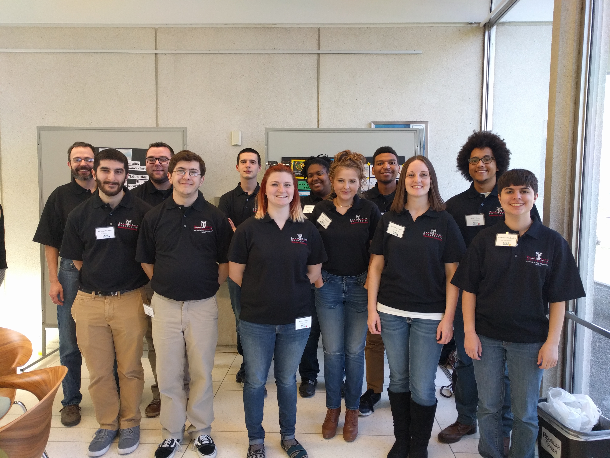

Spirits at Prairie Creek Park is a geolocative game to be played at Prairie Creek Park where players travel to different locations in the park, making observations, and collecting spirits based on those observations.
We recommend the game to played with a group of people.
We are an interdisciplinary team of eleven students and one faculty mentor representing Computer Science, Animation, Telecommunications, and Philosophy. We are working with Camp Prairie Creek, a free summer camp run by the Muncie Sanitary District, to create a game that encourages themes of environmentalism, water quality, and outdoorsmanship.
Special thanks to: